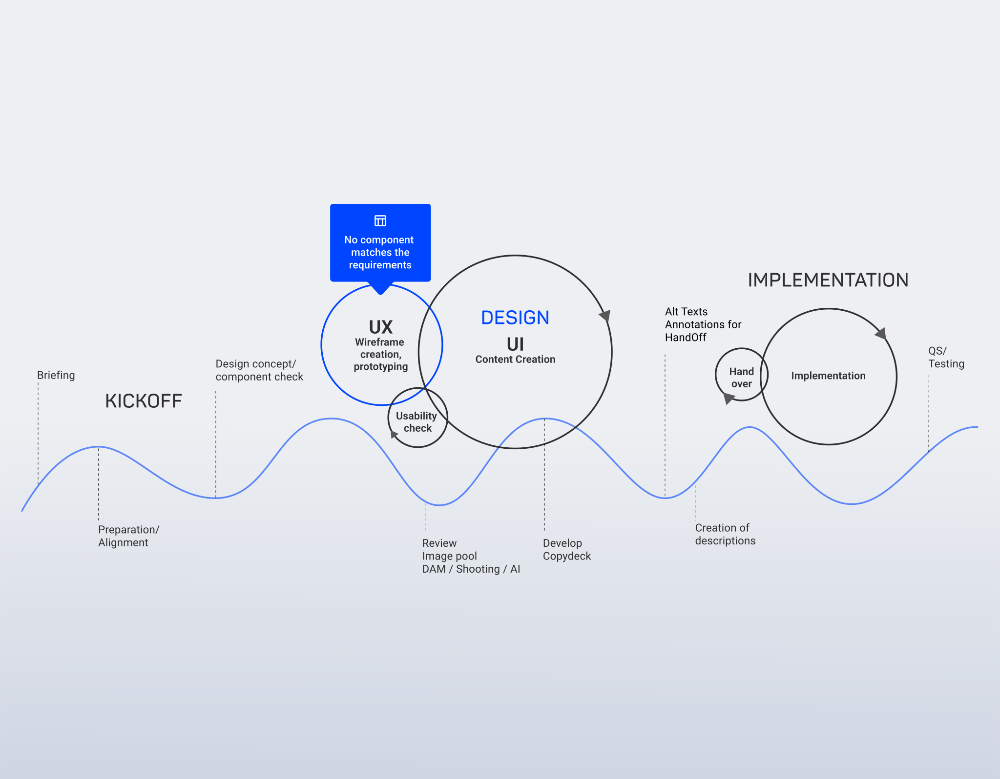

UX Strategy & Digital Product Consulting by Markus Mueller
I help companies translate complex challenges into thoughtful digital strategies. With over ten years of experience in digital design, UX, and consulting, my focus today is on anchoring user-centricity as an integral part of digital transformation. I see myself as a bridge builder between business goals, technical feasibility, and the people who use the products. For me, it is about more than just interfaces: it is about establishing modern processes and providing targeted consulting to make digital products not just functional, but strategically successful.

Concept and research German market
Orchestrating Multi-Platform Ecosystems in Healthcare

Shop Floor Analysis of a Complex Manufacturing Process
MS-Dynamics CRM-System

Charging station map

Personas, customer journeys, archetypes pilot project

Ticket System process/ mockup

Shopping concept

Weather application

Asset management and package assignment concept

SCCM Agent

News platform application

Self service portal